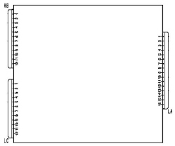

5505AH CHECK POWER SUPPLY TO THE PARKING SENSOR CONTROL UNIT (NSP)
- Path
- Test > 55 ELECTRICAL EQUIPMENT > 5505 INSTRUMENT/GAUGE ELECTRICAL CIRCUITS > 5505A MULTI-FUNCTION COMPONENTS > 5505AH CHECK POWER SUPPLY TO THE PARKING SENSOR CONTROL UNIT (NSP)
- Kind
- test / check procedure
- Applies to
- all engines; all production periods
- Interactive page
- https://sloeber94.github.io/elrnDB-fCrm/en/#/194004426
Applies to: all engines; all production periods
STEP | CHECK TO BE PERFORMED | RESOLUTION IF THE CHECK IS NOT OK |
|---|---|---|
1 | Check power supply (+30)
Examine the crimping: Use a lens to examine the terminal crimping area. The barrels must be turned symmetrically and no strands should emerge from the crimped area. The bare wire section under the barrels must emerge by 0.5. | -If blown, replace fuse F49 in the facia control unit after identifying the cause -Restore the wiring between the facia control unit and parking sensor node |
2 | Check the earth Disconnect the 16-way LA connector and connect an ohmmeter across pin 8 and earth to check the resistance is less than 1 ohm | Restore the earth connection |

AB connector pinout
1. Frontal sensor earth
2. Frontal sensor power supply
3. Acoustic signal negative signal (front buzzer)
4. Acoustic signal power supply (front buzzer)
5. Left outer front sensor signal
6. Left inner front sensor signal
7. Right inner front sensor signal
8. Right outer front sensor signal
9. N.C.
10. N.C.
11. N.C.
12. N.C.
LC connector pinout
1. Rear sensor earth
2. Right rear inner sensor signal
3. Left inner rear sensor signal
4. Right outer rear sensor signal
5. Left rear outer sensor signal
6. Rear sensor positive
7. Left inner rear sensor earth
8. Right outer rear sensor signal
9. Left outer rear sensor signal
10. Left inner rear sensor supply
11. Right outer rear sensor supply
12. Left outer rear sensor supply
LA connector pinout
1. +12 V ignition-operated
2. Rear buzzer negative signal
3. N.C.
4. Front sensor deactivation button
5. Negative signal from trailer control unit to cut out NSP
6. N.C.
7. B - CAN A
8. Earth
9. N.C.
10. Rear buzzer power supply
11. N.C.
12. N.C.
13. Front sensor deactivation signal led
14. B - CAN B
15. N.C.
16. N.C.